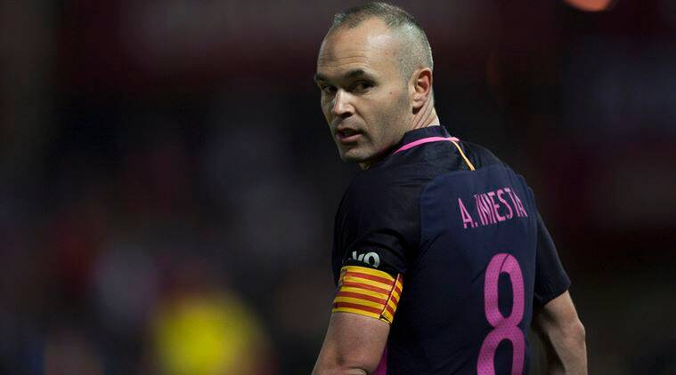

|  | Puno ime: | Andrés Iniesta Lujan |
| Datum rođenja: | 11. svibnja 1984. | |
| Visina: | 170cm | |
| Državljanstvo: | Španjolsko | |
| Pozicija: | Vezni igrač |
Tko je Andrés?
Iniesta je profesionalni španjolski nogometaš koji je rođen 11. svibnja 1984 u Fuentealbilli, i igra kao središnji vezni igrač za japanski klub Vissel Kobe. Iniesta je smatran jednim od najboljih igrača svoje generacije, odnosno svih vremena.
Pozadina
Početak nogometne karijere povezan je s klubom Albacete Balompie gdje je prvi put privukao pažnju skautova iz ostalih klubova u Španjolskoj. Iniestina obitelj je bila povezana s FC Barcelonom pa je bio upisan u njihovu nogometnu školu, La Masiu."Bio je to dugačak proces u kojem je on donio konačnu odluku. Dobili smo ponudu FC Barcelone i morao je otići u La Masiu sam, zato što nismo mogli napustiti naš grad Fuentealbillu. Nije htio napustiti obitelj i rekao mi je vrlo jasno da se ne vidi da će otići. Rekao sam mu da prilika poput takve ne dolazi često i da će puno toga naučiti u akademiji... Nakon nekoliko dana Andres mi je prišao i rekao da je odlučio da ide u Barcelonu. Bio sam zbunjen, pa sam ga pitao zašto se predomislio. Rekao mi je nešto šokantno. Rekao je da ide zato što to ja tražim od njega i zato što je to moj san."
- njegov otac na pitanje u kojem trenutku je Andres odlučio otići u Barcelonu